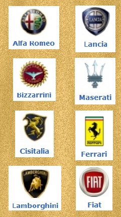
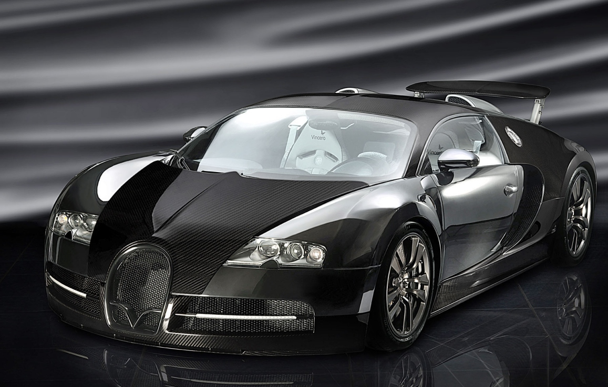

|  |
Вам нравятся горячие,
темпераментные женщины? Глупый вопрос. ТАКИЕ красотки никого не оставляют равнодушным. Роскошные, знойные,
капризные и норовистые… Машины Италии. Альфа Ромео и Лансиа, Феррари, Ламборджини, Мазерати и Дукати,
Пининфарина, Загато, Фиат… Некоторые из этих производителей остались лишь как воспоминание, а их творения
стали антиквариатом… Другие же продолжают функционировать, год за годом успешно создавая новые модели.
Наш сайт предназначен для поклонников красивых автомобилей.
Как изсестно, родиной автомобильной красоты является именно Италия. Мы можем рассказать вам о всех автомобилях
итальянских марок. Вашему вниманию также представлена галерея фотографий, в которой вы можете найти
интересующий вас автомобиль.
 |
Создан первый в мире лимузин Ferrari
Есть такие машины, о которых говорят еще задолго до их выпуска. К таким автомобилям можно смело отнести
результат просто невероятного тюнинга одной из самых удачных моделей Ferrari - первый в мире лимузин
этой итальянской марки. Совсем скоро ловкие британцы представят свою уникальную разработку, и тогда мир увидит,
насколько хорош может быть лимузин Ferrari, появления которого все так ждали. Подробнее в разделе СТАТЬИ. |